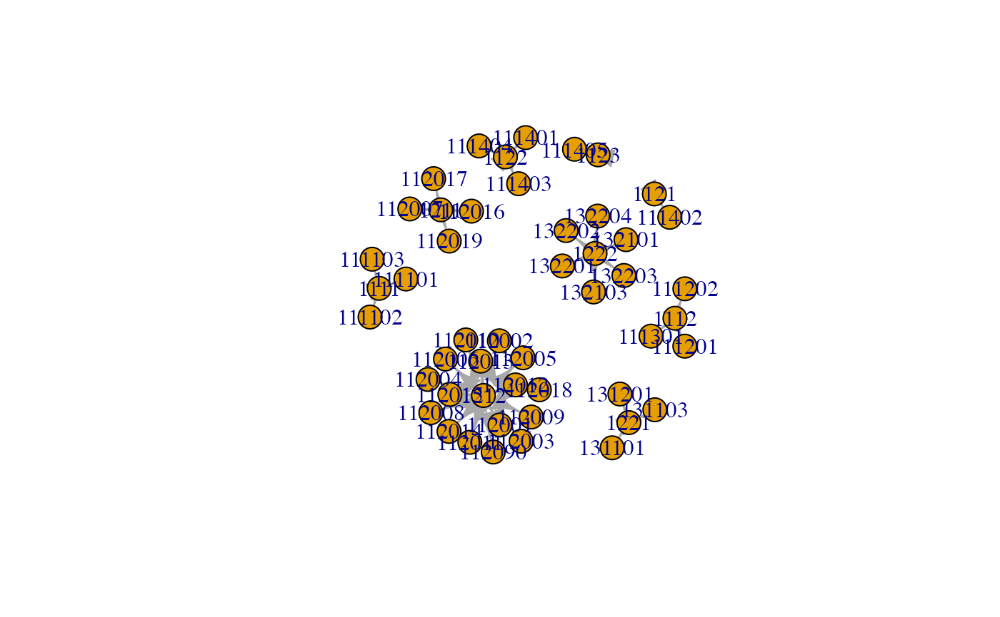
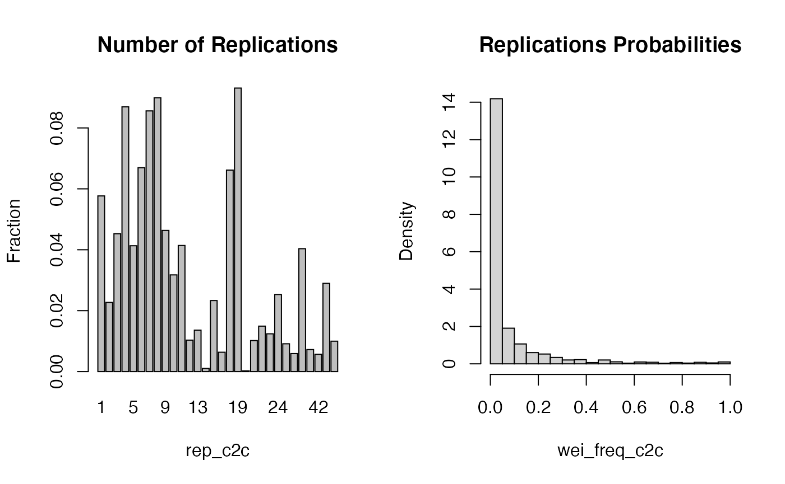

vignettes/Introduction.Rmd
Introduction.Rmd
pacman::p_load(cat2cat, dplyr, igraph)This algorithm was invented and implemented in the paper by Nasinski, Majchrowska and Broniatowska (2020)
The main rule is to replicate the observation if it could be assign to a few categories then using simple frequencies or statistical methods to approximate probabilities of being assign to each of them.
Why cat2cat:
- universal algorithm which could be used in different science fields
- stop removing variables for ml models because variable categories are not the same across time
- use a statistical modelling to join datasets from different time points and retain categorical variable structure
- visualize any factor variable across time
- real world datasets like occup
In many projects where dataset contains a categorical variable one of the biggest obstacle is that the data provider during internal processes was changing an encoding of such variable during a time. Thus some categories were grouped and other were separated or a new one is added or an old one is removed. The main objective is to merge a few surveys published by some data provider over the years.
cat2cat have to be used recursively where the prune methods (prune_c2c) might be needed to limit the problem of exponentially growing replications. Thus a prune_c2c with highest1 or highest method could be used before transferring a data.frame to the next iteration. However when only 3 periods have to be map then the middle one might be used as the base one.
We could not observe each subject category across time. There is not possible to build automatically a mapping table. We have to provide manually a mapping table - usually provided by a data provider like a national statistics office. In worst case somebody have to make it manually though supported by some official directives.
| ID | occup | code | date |
|---|---|---|---|
| uninformative anonymous | carpenter | 102 | 2020-02-10 |
| uninformative anonymous | plumber | 103 | 2020-02-10 |
| uninformative anonymous | carpenter or plumber | 121 | 2020-02-12 |
| uninformative anonymous | carpenter or plumber | 121 | 2020-02-12 |
Notice: New categories might appeared in a new partition or same old categories are depreciated.
Here we could observe each subject category across time. There is a possibility to build a mapping automatically.
| ID | name | occup | code | date |
|---|---|---|---|---|
| 000 | Retire Jim | carpenter | 102 | 2020-02-10 |
| 111 | John Doe | carpenter | 102 | 2020-02-10 |
| 222 | Jimmy Smith | plumber | 103 | 2020-02-10 |
| 111 | John Doe | carpenter or plumber | 121 | 2020-02-12 |
| 222 | Jimmy Smith | carpenter or plumber | 121 | 2020-02-12 |
Here we adjust to old encoding if we are sure that subjects have the same category. We have to assume that each person could not change the occupation which sometimes might seems not reasonable. Thus the best solution might to build a transition table and treat it as dataset without identifier.
Notice: We could have new identifiers in a new partition or old identifiers which do not continue to participate. Notice: New categories might appeared in a new partition or same old categories are depraciated.
We could use simple frequencies or statistical/ml methods to approximate probabilities of being assign to each of possible categories. The probabilities might be used in further statistical models as a weights or to narrow the number of possible categories for each subject.
Each new observation has some probability of existence because of the fact that it could be assign to a few groups. Probabilities were calculated using frequencies of subjects in each group/category at the previous survey/period. More advanced users might specify custom per group probabilities. This should be obvious that for each observations which was replicated a few times probabilities have to sum to one. There were made some assumptions about cases such as when there were no such groups in the previous period - some or all. When there is no frequencies the probabilities are allocated equally.
Finally we get the dataset which has additional rows which comes from a replication process and at least 3 supplementary variables - new group, probability and number of replications. There will be added additional columns like index_c2c, g_new_c2c, wei_freq_c2c, rep_c2c, wei_(ml method name)_c2c.
For statistical models like linear regression its results should be adjusted because of a replication process which artificially enlarge the number of degree of freedom. Another solution might be to use the prune_c2c function to remove additional rows and leave only an one observation with highest probability for each subject.
Rearrangement of the old ISCO classification into the new one To rearrange the old classification into the new one, an associative array that maps keys to values was used. More precisely, an association list was used which is a linked list in which each list element is comprised of a key and value. An association list where unique four digits COS group codes from 2010 are keys and matching groups from 2008 are values was constructed. There are around 500 unique four-digit COS group codes, so searching an association list is not less preferable than searching a binary search tree or hash table. We were able to build the association list because of existence of a transition table provided by CSO. Transition table convey information needed for matching different COS coding in time. The first association list – transitions:
> head(get_mappings(...))
$‘1111‘
[1] "1111"
$‘1112‘
[1] "1112"
$‘1113‘
[1] "1112"
$‘1114‘
[1] "1121" "1122" "1123"
$‘1120‘
[1] "1211" "1212"
$‘1311‘
[1] "1221" "1311"For the surveys published after 2008, each observation was replicated in accordance with the COS association list. However, each new observation has some probability of existence because it can be assigned to several groups. Therefore, we built a next association list, which provides probabilities of attendance in each group. Probabilities were calculated using frequencies of workers in each group in the previous survey. It should be obvious that for each observation that was replicated, the probabilities have to add up to one. We also made some assumptions about cases where some occupational groups were lacking in previous surveys.
The second association list – probabilities:
> head(cat_apply_freq(...))
$‘1111‘
[1] 1
$‘1112‘
[1] 1
$‘1113‘
[1] 1
$‘1114‘
[1] 0.3333333 0.3333333 0.3333333
$‘1120‘
[1] 0.8343979 0.1656021
$‘1311‘
[1] 0.95471934 0.04528066Finally, we get the dataset that has additional rows from a replication process and three supplementary variables – new group, probability, and number of replications. This dataset was built from five SWS surveys published biannually between 2006 and 2014. It contains over 5 million observations and 70 variables.
occup dataset is an example of panel dataset without unique identifier. It is presenting a characteristics from randomly selected company and then using k step procedure employees sample are chosen. The survey is anonymous and take place every two years. Use ?occup for more details. trans dataset containing transitions between old (2008) and new (2010) occupational codes.
## Rows: 68,370
## Columns: 12
## $ id <int> 1, 2, 3, 4, 5, 6, 7, 8, 9, 10, 11, 12, 13, 14, 15, 16, 17, …
## $ age <dbl> 49.29183, 33.95678, 30.98335, 55.26238, 34.05539, 35.23543,…
## $ sex <lgl> FALSE, FALSE, TRUE, TRUE, TRUE, FALSE, FALSE, TRUE, FALSE, …
## $ edu <int> 1, 1, 1, 1, 1, 1, 1, 1, 4, 1, 1, 1, 1, 4, 1, 1, 3, 2, 1, 1,…
## $ exp <dbl> 26.461835, 7.536783, 7.483355, 24.762377, 10.055385, 11.235…
## $ district <int> 8, 8, 8, 8, 8, 8, 8, 8, 8, 8, 8, 8, 8, 8, 8, 8, 8, 8, 8, 8,…
## $ parttime <dbl> 1.0000000, 1.0000000, 0.3333333, 1.0000000, 1.0000000, 1.00…
## $ salary <dbl> 94730.94, 67619.39, 17862.90, 261882.46, 84540.17, 94002.69…
## $ code <chr> "2471", "2471", "2471", "1112", "2471", "2479", "3431", "11…
## $ multiplier <dbl> 223.2233, 279.4190, 240.4430, 233.9506, 254.0955, 261.7070,…
## $ year <int> 2008, 2008, 2008, 2008, 2008, 2008, 2008, 2008, 2008, 2008,…
## $ code4 <chr> "2471", "2471", "2471", "1112", "2471", "2479", "3431", "11…## Rows: 2,666
## Columns: 2
## $ old <chr> "1111", "1111", "1111", "1112", "1112", "1112", "1121", "1122", "1…
## $ new <chr> "111101", "111102", "111103", "111201", "111202", "111301", "11140…graph for some mappings inside trans table:
gg = graph_from_data_frame(trans[1:40, ])
plot.igraph(gg)
If you are interested in the utils functions here are presented some of them.
Processing of the mapping table and deriving simple frequencies.
mappings <- get_mappings(trans)
mappings$to_old[1:4]## $`111101`
## [1] "1111"
##
## $`111102`
## [1] "1111"
##
## $`111103`
## [1] "1111"
##
## $`111201`
## [1] "1112"
mappings$to_new[1:4]## $`1111`
## [1] "111101" "111102" "111103"
##
## $`1112`
## [1] "111201" "111202" "111301"
##
## $`1121`
## [1] "111402"
##
## $`1122`
## [1] "111401" "111403" "111404"
# occup$multiplier part inside get_freqs is optional
# this variable specifying how many times to replicate each observation to get reliable population
mapp_p <- cat_apply_freq(mappings$to_old, get_freqs(occup$code4[occup$year == "2008"], occup$multiplier[occup$year == "2008"]))
data.frame(I(mappings$to_old), I(mapp_p)) %>% head()## mappings.to_old mapp_p
## 111101 1111 1
## 111102 1111 1
## 111103 1111 1
## 111201 1112 1
## 111202 1112 1
## 111301 1112 1
mapp_p <- cat_apply_freq(mappings$to_new, get_freqs(occup$code4[occup$year == "2010"], occup$multiplier[occup$year == "2010"]))
data.frame(I(mappings$to_new), I(mapp_p)) %>% head()## mappings.to_new mapp_p
## 1111 111101, .... 0.333333....
## 1112 111201, .... 0.333333....
## 1121 111402 1
## 1122 111401, .... 0.333333....
## 1123 111405 1
## 1211 112007, .... 0.25, 0.....Splitting the data
occup_old = occup[occup$year == 2008,]
occup_new = occup[occup$year == 2010,]Simple model where probabilities will be taken from categories frequencies.
cat2cat(
data = list(old = occup_old ,new = occup_new, cat_var = "code", time_var = "year"),
mappings = list(trans = trans, direction = "forward")
)## $old
## # A tibble: 34,176 × 17
## id age sex edu exp district parttime salary code multiplier year
## <int> <dbl> <lgl> <int> <dbl> <int> <dbl> <dbl> <chr> <dbl> <int>
## 1 1 49.3 FALSE 1 26.5 8 1 9.47e4 2471 223. 2008
## 2 2 34.0 FALSE 1 7.54 8 1 6.76e4 2471 279. 2008
## 3 3 31.0 TRUE 1 7.48 8 0.333 1.79e4 2471 240. 2008
## 4 4 55.3 TRUE 1 24.8 8 1 2.62e5 1112 234. 2008
## 5 5 34.1 TRUE 1 10.1 8 1 8.45e4 2471 254. 2008
## 6 6 35.2 FALSE 1 11.2 8 1 9.40e4 2479 262. 2008
## 7 7 32.4 FALSE 1 8.50 8 1 6.53e4 3431 256. 2008
## 8 8 48.0 TRUE 1 24.5 8 1 2.62e5 1112 251. 2008
## 9 9 51.0 FALSE 4 32.0 8 1 4.95e4 3431 259. 2008
## 10 10 69.6 FALSE 1 44.6 8 1 1.75e5 2422 245. 2008
## # … with 34,166 more rows, and 6 more variables: code4 <chr>, index_c2c <int>,
## # g_new_c2c <chr>, wei_freq_c2c <dbl>, rep_c2c <dbl>, wei_naive_c2c <dbl>
##
## $new
## # A tibble: 36,850 × 17
## id age sex edu exp district parttime salary code multiplier year
## <int> <dbl> <lgl> <int> <dbl> <int> <dbl> <dbl> <chr> <dbl> <int>
## 1 34177 52.5 TRUE 1 29.5 8 1 9.39e4 1213… 240. 2010
## 2 34178 56.1 FALSE 6 35.7 8 0.67 2.81e4 9112… 265. 2010
## 3 34179 28.4 FALSE 1 6.36 8 1 4.35e4 4226… 232. 2010
## 4 34180 43.7 FALSE 5 23.0 8 1 3.37e4 9112… 225. 2010
## 5 34181 55.0 TRUE 6 34.6 6 1 7.27e4 8322… 230. 2010
## 6 34182 54.1 FALSE 4 27.9 8 1 4.73e4 3343… 215. 2010
## 7 34183 62.6 FALSE 8 24.6 8 1 2.15e4 9112… 221. 2010
## 8 34184 31.2 FALSE 1 6.37 8 1 7.53e4 2611… 202. 2010
## 9 34185 40.6 TRUE 1 18.9 8 1 1.02e5 2611… 255. 2010
## 10 34186 25.0 TRUE 5 5.82 8 1 2.11e4 9629… 226. 2010
## # … with 36,840 more rows, and 6 more variables: code4 <chr>, index_c2c <int>,
## # g_new_c2c <chr>, wei_freq_c2c <dbl>, rep_c2c <int>, wei_naive_c2c <dbl>Currently knn/rf/lda methods are available to approximate probabilities of being assign to each of categories.
occup_2 = cat2cat(
data = list(old = occup_old ,new = occup_new, cat_var = "code", time_var = "year"),
mappings = list(trans = trans, direction = "forward"),
ml = list(method = "knn", features = c("age", "sex", "edu", "exp", "parttime", "salary"), args = list(k = 10))
)## List of 2
## $ old: tibble [34,176 × 18] (S3: tbl_df/tbl/data.frame)
## ..$ id : int [1:34176] 1 2 3 4 5 6 7 8 9 10 ...
## ..$ age : num [1:34176] 49.3 34 31 55.3 34.1 ...
## ..$ sex : logi [1:34176] FALSE FALSE TRUE TRUE TRUE FALSE ...
## ..$ edu : int [1:34176] 1 1 1 1 1 1 1 1 4 1 ...
## ..$ exp : num [1:34176] 26.46 7.54 7.48 24.76 10.06 ...
## ..$ district : int [1:34176] 8 8 8 8 8 8 8 8 8 8 ...
## ..$ parttime : num [1:34176] 1 1 0.333 1 1 ...
## ..$ salary : num [1:34176] 94731 67619 17863 261882 84540 ...
## ..$ code : chr [1:34176] "2471" "2471" "2471" "1112" ...
## ..$ multiplier : num [1:34176] 223 279 240 234 254 ...
## ..$ year : int [1:34176] 2008 2008 2008 2008 2008 2008 2008 2008 2008 2008 ...
## ..$ code4 : chr [1:34176] "2471" "2471" "2471" "1112" ...
## ..$ index_c2c : int [1:34176] 1 2 3 4 5 6 7 8 9 10 ...
## ..$ g_new_c2c : chr [1:34176] "2471" "2471" "2471" "1112" ...
## ..$ wei_freq_c2c : num [1:34176] 1 1 1 1 1 1 1 1 1 1 ...
## ..$ rep_c2c : num [1:34176] 1 1 1 1 1 1 1 1 1 1 ...
## ..$ wei_naive_c2c: num [1:34176] 1 1 1 1 1 1 1 1 1 1 ...
## ..$ wei_knn_c2c : num [1:34176] 1 1 1 1 1 1 1 1 1 1 ...
## $ new: tibble [36,850 × 18] (S3: tbl_df/tbl/data.frame)
## ..$ id : int [1:36850] 34177 34178 34179 34180 34181 34182 34183 34184 34185 34186 ...
## ..$ age : num [1:36850] 52.5 56.1 28.4 43.7 55 ...
## ..$ sex : logi [1:36850] TRUE FALSE FALSE FALSE TRUE FALSE ...
## ..$ edu : int [1:36850] 1 6 1 5 6 4 8 1 1 5 ...
## ..$ exp : num [1:36850] 29.49 35.73 6.36 23 34.6 ...
## ..$ district : int [1:36850] 8 8 8 8 6 8 8 8 8 8 ...
## ..$ parttime : num [1:36850] 1 0.67 1 1 1 1 1 1 1 1 ...
## ..$ salary : num [1:36850] 93946 28062 43532 33682 72680 ...
## ..$ code : chr [1:36850] "121303" "911207" "422602" "911290" ...
## ..$ multiplier : num [1:36850] 240 265 232 225 230 ...
## ..$ year : int [1:36850] 2010 2010 2010 2010 2010 2010 2010 2010 2010 2010 ...
## ..$ code4 : chr [1:36850] "1213" "9112" "4226" "9112" ...
## ..$ index_c2c : int [1:36850] 1 2 3 4 5 6 7 8 9 10 ...
## ..$ g_new_c2c : chr [1:36850] "1239" "9132" "4222" "9132" ...
## ..$ wei_freq_c2c : num [1:36850] 1 1 1 1 1 1 1 1 1 1 ...
## ..$ rep_c2c : int [1:36850] 1 1 1 1 1 1 1 1 1 1 ...
## ..$ wei_naive_c2c: num [1:36850] 1 1 1 1 1 1 1 1 1 1 ...
## ..$ wei_knn_c2c : num [1:36850] 1 1 1 1 1 1 1 1 1 1 ...
occup_3 <- cat2cat(
data = list(old = occup_old, new = occup_new, cat_var = "code", time_var = "year"),
mappings = list(trans = trans, direction = "backward"),
ml = list(method = "knn", features = c("age", "sex", "edu", "exp", "parttime", "salary"), args = list(k = 10))
)Without ml subsection only simple frequencies are assessed. When ml model is broken then weights from simple frequencies are taken. knn method is recommended for smaller datasets.
## wei_freq_c2c wei_naive_c2c wei_knn_c2c
## wei_freq_c2c 1.0000000 0.5631527 0.8927482
## wei_naive_c2c 0.5631527 1.0000000 0.5074644
## wei_knn_c2c 0.8927482 0.5074644 1.0000000Summary plot:

## List of 2
## $ old: tibble [451,670 × 18] (S3: tbl_df/tbl/data.frame)
## ..$ id : int [1:451670] 1 1 1 1 1 1 1 1 1 1 ...
## ..$ age : num [1:451670] 49.3 49.3 49.3 49.3 49.3 ...
## ..$ sex : logi [1:451670] FALSE FALSE FALSE FALSE FALSE FALSE ...
## ..$ edu : int [1:451670] 1 1 1 1 1 1 1 1 1 1 ...
## ..$ exp : num [1:451670] 26.5 26.5 26.5 26.5 26.5 ...
## ..$ district : int [1:451670] 8 8 8 8 8 8 8 8 8 8 ...
## ..$ parttime : num [1:451670] 1 1 1 1 1 1 1 1 1 1 ...
## ..$ salary : num [1:451670] 94731 94731 94731 94731 94731 ...
## ..$ code : chr [1:451670] "2471" "2471" "2471" "2471" ...
## ..$ multiplier : num [1:451670] 223 223 223 223 223 ...
## ..$ year : int [1:451670] 2008 2008 2008 2008 2008 2008 2008 2008 2008 2008 ...
## ..$ code4 : chr [1:451670] "2471" "2471" "2471" "2471" ...
## ..$ index_c2c : int [1:451670] 1 1 1 1 1 1 1 1 1 1 ...
## ..$ g_new_c2c : chr [1:451670] "335101" "242209" "242212" "242214" ...
## ..$ wei_freq_c2c : num [1:451670] 0.2124 0.0674 0.0155 0.0415 0.0466 ...
## ..$ rep_c2c : int [1:451670] 11 11 11 11 11 11 11 11 11 11 ...
## ..$ wei_naive_c2c: num [1:451670] 0.0909 0.0909 0.0909 0.0909 0.0909 ...
## ..$ wei_knn_c2c : num [1:451670] 0.2 0.4 0 0.2 0 0 0 0 0 0 ...
## $ new: tibble [34,194 × 18] (S3: tbl_df/tbl/data.frame)
## ..$ id : int [1:34194] 34177 34178 34179 34180 34181 34182 34183 34184 34185 34186 ...
## ..$ age : num [1:34194] 52.5 56.1 28.4 43.7 55 ...
## ..$ sex : logi [1:34194] TRUE FALSE FALSE FALSE TRUE FALSE ...
## ..$ edu : int [1:34194] 1 6 1 5 6 4 8 1 1 5 ...
## ..$ exp : num [1:34194] 29.49 35.73 6.36 23 34.6 ...
## ..$ district : int [1:34194] 8 8 8 8 6 8 8 8 8 8 ...
## ..$ parttime : num [1:34194] 1 0.67 1 1 1 1 1 1 1 1 ...
## ..$ salary : num [1:34194] 93946 28062 43532 33682 72680 ...
## ..$ code : chr [1:34194] "121303" "911207" "422602" "911290" ...
## ..$ multiplier : num [1:34194] 240 265 232 225 230 ...
## ..$ year : int [1:34194] 2010 2010 2010 2010 2010 2010 2010 2010 2010 2010 ...
## ..$ code4 : chr [1:34194] "1213" "9112" "4226" "9112" ...
## ..$ index_c2c : int [1:34194] 1 2 3 4 5 6 7 8 9 10 ...
## ..$ g_new_c2c : chr [1:34194] "121303" "911207" "422602" "911290" ...
## ..$ wei_freq_c2c : num [1:34194] 1 1 1 1 1 1 1 1 1 1 ...
## ..$ rep_c2c : num [1:34194] 1 1 1 1 1 1 1 1 1 1 ...
## ..$ wei_naive_c2c: num [1:34194] 1 1 1 1 1 1 1 1 1 1 ...
## ..$ wei_knn_c2c : num [1:34194] 1 1 1 1 1 1 1 1 1 1 ...New frequencies for potential next step might be derived manually and then used in next iteration by freqs_df argument (data.frame with 2 columns where first one is category name and second counts which will be used to assess the probabilities). This might be useful for advanced users. Optional multiplier part specifying how many times to replicate each observation to get reliable population
get_freqs(x = occup_3$new$g_new_c2c, multiplier = floor(occup_3$new$multiplier * occup_3$new$wei_freq_c2c)) %>% head()## input Freq
## 1 111102 228
## 2 111103 3517
## 3 111201 1233
## 4 111301 12182
## 5 111405 1028
## 6 112001 4741or backward:
get_freqs(x = occup_2$old$g_new_c2c, multiplier = floor(occup_2$old$multiplier * occup_2$old$wei_freq_c2c)) %>% head()## input Freq
## 1 1112 12977
## 2 1123 1268
## 3 1211 124293
## 4 1212 44410
## 5 1221 2256
## 6 1222 11668Remember to adjust results (summary_c2c) because of artificially enlarge degrees of freedom. The first weights (multiplier variable) might be surprising although they are multipliers which help to replicate the true population.
## orginal dataset
lms2 <- lm(I(log(salary)) ~ age + sex + factor(edu) + parttime + exp, occup_old, weights = multiplier)
summary(lms2)##
## Call:
## lm(formula = I(log(salary)) ~ age + sex + factor(edu) + parttime +
## exp, data = occup_old, weights = multiplier)
##
## Weighted Residuals:
## Min 1Q Median 3Q Max
## -41.649 -4.154 -0.170 4.134 94.979
##
## Coefficients:
## Estimate Std. Error t value Pr(>|t|)
## (Intercept) 8.6049934 0.0175898 489.203 < 2e-16 ***
## age -0.0028783 0.0004561 -6.311 2.81e-10 ***
## sexTRUE 0.2539537 0.0050557 50.231 < 2e-16 ***
## factor(edu)2 -0.0799110 0.0097006 -8.238 < 2e-16 ***
## factor(edu)3 -0.3579335 0.0124684 -28.707 < 2e-16 ***
## factor(edu)4 -0.4252729 0.0072134 -58.956 < 2e-16 ***
## factor(edu)5 -0.4050551 0.0101847 -39.771 < 2e-16 ***
## factor(edu)6 -0.6473797 0.0072134 -89.746 < 2e-16 ***
## factor(edu)7 -0.5295860 0.0783593 -6.758 1.42e-11 ***
## factor(edu)8 -0.6751645 0.0110551 -61.073 < 2e-16 ***
## parttime 1.9342513 0.0114274 169.264 < 2e-16 ***
## exp 0.0128464 0.0004370 29.396 < 2e-16 ***
## ---
## Signif. codes: 0 '***' 0.001 '**' 0.01 '*' 0.05 '.' 0.1 ' ' 1
##
## Residual standard error: 7.302 on 34164 degrees of freedom
## Multiple R-squared: 0.5797, Adjusted R-squared: 0.5796
## F-statistic: 4284 on 11 and 34164 DF, p-value: < 2.2e-16
## using one highest cross weights
## cross_c2c to cross different methods weights
## prune_c2c - highest1 leave only one the highest probability obs for each subject
occup_old_3 <- occup_3$old %>%
cross_c2c(., c("wei_freq_c2c", "wei_knn_c2c"), c(1/2,1/2)) %>%
prune_c2c(.,column = "wei_cross_c2c", method = "highest1")
lms <- lm(I(log(salary)) ~ age + sex + factor(edu) + parttime + exp, occup_old_3, weights = multiplier)
summary(lms)##
## Call:
## lm(formula = I(log(salary)) ~ age + sex + factor(edu) + parttime +
## exp, data = occup_old_3, weights = multiplier)
##
## Weighted Residuals:
## Min 1Q Median 3Q Max
## -41.649 -4.154 -0.170 4.134 94.979
##
## Coefficients:
## Estimate Std. Error t value Pr(>|t|)
## (Intercept) 8.6049934 0.0175898 489.203 < 2e-16 ***
## age -0.0028783 0.0004561 -6.311 2.81e-10 ***
## sexTRUE 0.2539537 0.0050557 50.231 < 2e-16 ***
## factor(edu)2 -0.0799110 0.0097006 -8.238 < 2e-16 ***
## factor(edu)3 -0.3579335 0.0124684 -28.707 < 2e-16 ***
## factor(edu)4 -0.4252729 0.0072134 -58.956 < 2e-16 ***
## factor(edu)5 -0.4050551 0.0101847 -39.771 < 2e-16 ***
## factor(edu)6 -0.6473797 0.0072134 -89.746 < 2e-16 ***
## factor(edu)7 -0.5295860 0.0783593 -6.758 1.42e-11 ***
## factor(edu)8 -0.6751645 0.0110551 -61.073 < 2e-16 ***
## parttime 1.9342513 0.0114274 169.264 < 2e-16 ***
## exp 0.0128464 0.0004370 29.396 < 2e-16 ***
## ---
## Signif. codes: 0 '***' 0.001 '**' 0.01 '*' 0.05 '.' 0.1 ' ' 1
##
## Residual standard error: 7.302 on 34164 degrees of freedom
## Multiple R-squared: 0.5797, Adjusted R-squared: 0.5796
## F-statistic: 4284 on 11 and 34164 DF, p-value: < 2.2e-16
## we have to adjust size of stds as we artificially enlarge degrees of freedom
occup_old_3 <- occup_3$old %>%
prune_c2c(method = "nonzero") # many different prune methods like highest
lms1 <- lm(I(log(salary)) ~ age + sex + factor(edu) + parttime + exp, occup_old_3, weights = multiplier * wei_freq_c2c)
## summary_c2c
summary_c2c(lms1, df_old = nrow(occup_old))## Estimate Std. Error t value Pr(>|t|) correct
## (Intercept) 8.604993403 0.0055287709 1556.40261 0.000000e+00 3.18095
## age -0.002878253 0.0001433546 -20.07786 1.296837e-89 3.18095
## sexTRUE 0.253953695 0.0015890854 159.81123 0.000000e+00 3.18095
## factor(edu)2 -0.079911042 0.0030490685 -26.20835 3.004023e-151 3.18095
## factor(edu)3 -0.357933538 0.0039190179 -91.33246 0.000000e+00 3.18095
## factor(edu)4 -0.425272851 0.0022672906 -187.56874 0.000000e+00 3.18095
## factor(edu)5 -0.405055098 0.0032012174 -126.53158 0.000000e+00 3.18095
## factor(edu)6 -0.647379667 0.0022673015 -285.52870 0.000000e+00 3.18095
## factor(edu)7 -0.529586026 0.0246296091 -21.50201 1.741074e-102 3.18095
## factor(edu)8 -0.675164484 0.0034747932 -194.30350 0.000000e+00 3.18095
## parttime 1.934251280 0.0035918181 538.51593 0.000000e+00 3.18095
## exp 0.012846366 0.0001373618 93.52212 0.000000e+00 3.18095
## std.error_c statistic_c p.value_c
## (Intercept) 0.0175867461 489.288544 0.000000e+00
## age 0.0004560038 -6.311906 2.789964e-10
## sexTRUE 0.0050548020 50.240088 0.000000e+00
## factor(edu)2 0.0096989357 -8.239156 1.795448e-16
## factor(edu)3 0.0124662017 -28.712317 3.613791e-179
## factor(edu)4 0.0072121390 -58.966258 0.000000e+00
## factor(edu)5 0.0101829139 -39.777917 0.000000e+00
## factor(edu)6 0.0072121738 -89.762072 0.000000e+00
## factor(edu)7 0.0783455659 -6.759617 1.405773e-11
## factor(edu)8 0.0110531449 -61.083474 0.000000e+00
## parttime 0.0114253954 169.294034 0.000000e+00
## exp 0.0004369410 29.400685 1.177138e-187